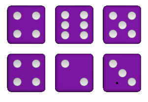
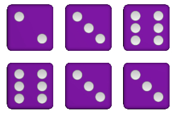
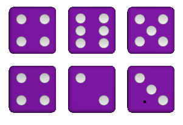
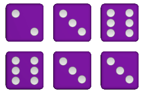

Npr:

Suma od jedinica = 3
Suma od šestica = 18
Npr:

Max = 3+4+6+6+4 = 23
Min = 3+4+6+4+3 = 20
Npr:
Npr:
Npr:

Npr:

Mo쬰 se igrati sa 5 ili sa 6 kockica. Jedan krug u igri se sastoji od 3 bacanja kockica. U prvom bacanju se bacaju sve kockice, dok u ostala 2 bacanja se biraju kockice koje se 쬰le zadr쬬ti. Poslije 3. bacanja, a mo쬰 i prije, potrebno je upisati bodove u tablicu. Nakon toga opet ide novi krug od 3 bacanja i tako sve dok se ne popuni tablica. Ako se igra sa 6 kockica onda se pri upisu bodova u obzir uzimaju vrijednosti odabranih 5 kockica.
Npr:
Suma od jedinica = 3
Suma od šestica = 18
Npr:
Max = 3+4+6+6+4 = 23
Min = 3+4+6+4+3 = 20
Npr:
Npr:
Npr:
Npr:
Stupci u tablici su označeni sa strelicama prema Gore, Dolje, Gore-Dolje i N (najava).
Za lakše bodovanje postoje redovi u kojima su zbrojeni bodovi iz prethodnih redova.
Max i Min se ne sumiraju u ukupni rezultat. Vrijednost Min se oduzme od Max i pomno쬴 sa brojem jedinica iz prvog retka.
Prijavom u ovo natjecanje priključujete se u posljednju skupinu.
Pobjedom ostvarujete 3 boda, a neriješena igra nosi 1 bod.
Najboljih 5 iz skupine mogu napredovati u jači rang, a najslabijih 5 odlaze u slabiju skupinu.
U ligi sudjeluje 20 igrača i liga traje 3 do 7 dana.
Jednokratni ulog za ovu ligu je 8,000💎
Prvi, odnosno pobjednik lige na kraju tjedna dobiva dio nagrade iz milijunskog fonda za ligu i 🏆.
Mo쬰te u bilo kojem trenutku izaći iz lige ali onda gubite trenutnu poziciju. Povratkom nazad u ligu priključujete se ponovo u posljednju skupinu.
U ovoj ligi potrebno je ostvariti 7 pobjeda za redom i tada osvajate 2,500,000💎 i 💣.
Ako izgubite jednu partiju ispadate iz natjecanja ali imate se pravo ponovo prijaviti u bilo kojem trenutku.
Ulog za ovu ligu je 20,000💎
Sretno!